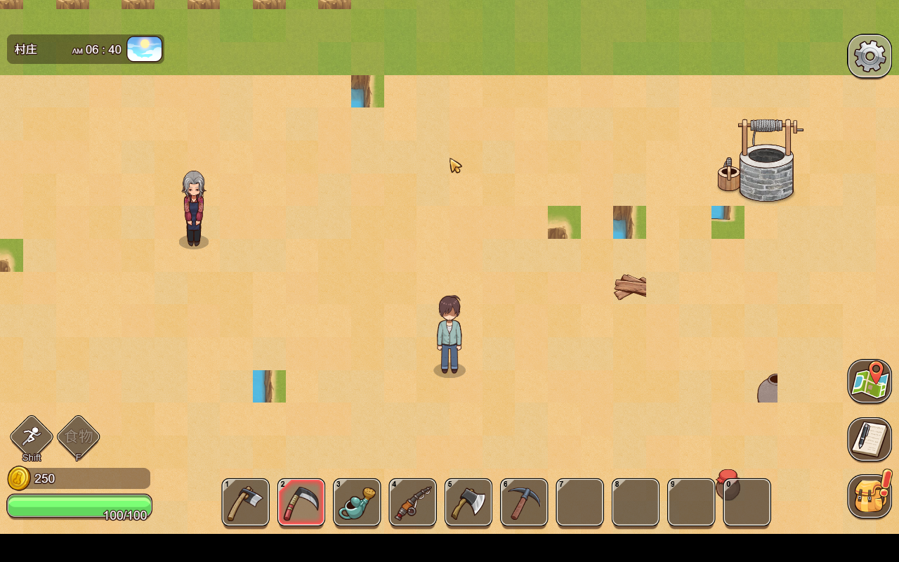
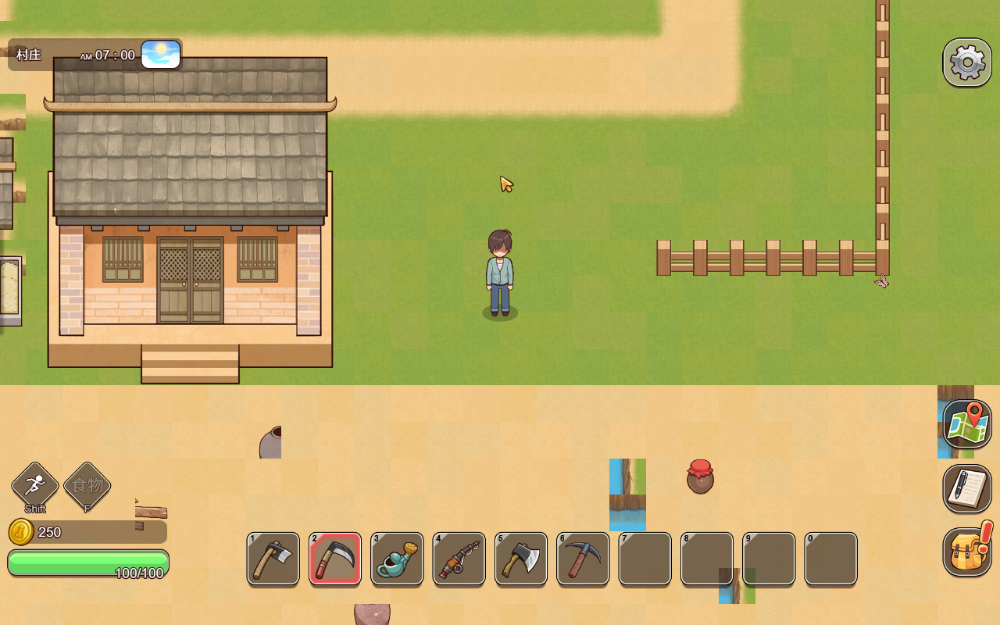

AgentFarm2 宅基地审查（村地图扩展区）
村地图 77×61 → 105×89（四向各扩展 14 格）。7 户宅基地（第 2~8 号玩家），房型来自原版村内建筑（各不相同）。
截图视角：站在每户门口向房子方向看。第 1 位玩家保留原版家门口（未列出）。
宅基地 #2 — 树根家房型
（村北端左侧 · 出生 3100,500）

宅基地 #3 — 小卖部房型
（村北端右侧 · 出生 6000,1400）
宅基地 #4 — 木匠家房型
（村南端左侧 · 出生 3000,6700）
宅基地 #5 — 老太太家房型
（村南端右侧 · 出生 5800,5900）
宅基地 #6 — 屠夫家房型
（村东端 · 出生 7600,1600）

宅基地 #7 — 村长家房型
（村东端 · 出生 8400,4600）
宅基地 #8 — 家石伯家房型
（村西端 · 出生 1200,2800）
⚠ 质检提示：此户截图中央偏左有蓝色条纹（可能复制房型时带入水面 tile），需要你确认。